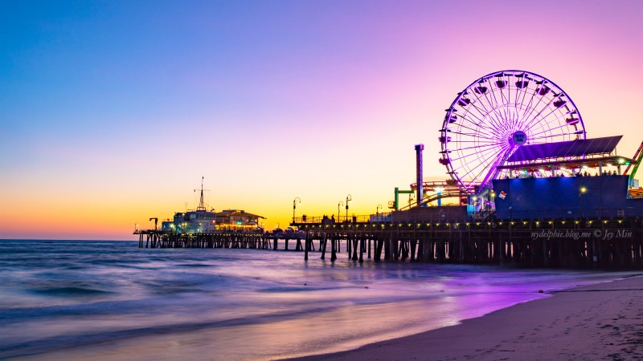

8일차
산타모니카 구경
다운타운에서 가장 가까운 곳에 위치한 해안 도시이다.
야자나무가 줄지어 있는 태평양 연안은 남국의 분위기가 물씬 풍겨 해변 리조트 단지로서 산타 모니카의 오랜 명성을 확인하게 해준다.
산타 모니카 비치는 LA 시민들의 사랑을 듬뿍 받고 있으며 주말이면 주차를 할 수 없을 정도로 많은 사람들로 붐빈다.
바구니에 준비해 온 음식을 펼쳐 놓고 해변에서 여유로운 시간을 보내는 사람들의 모습에서 LA의 낭만이 묻어난다.
해가 질 무렵, 시푸드 레스토랑에서 일몰을 감상하며 식사를 즐기는 여행자도 많다.